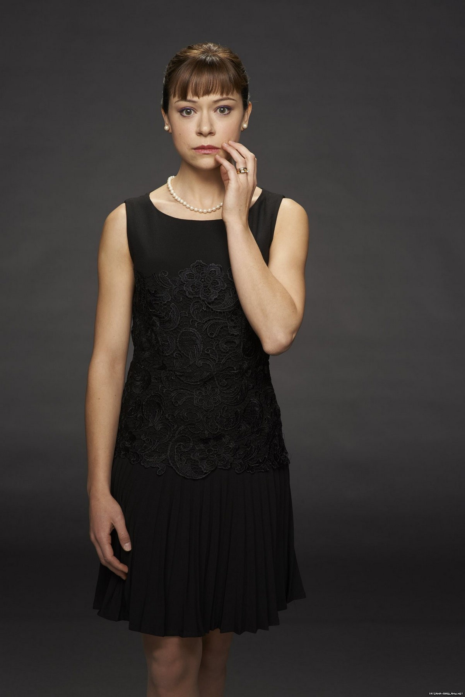
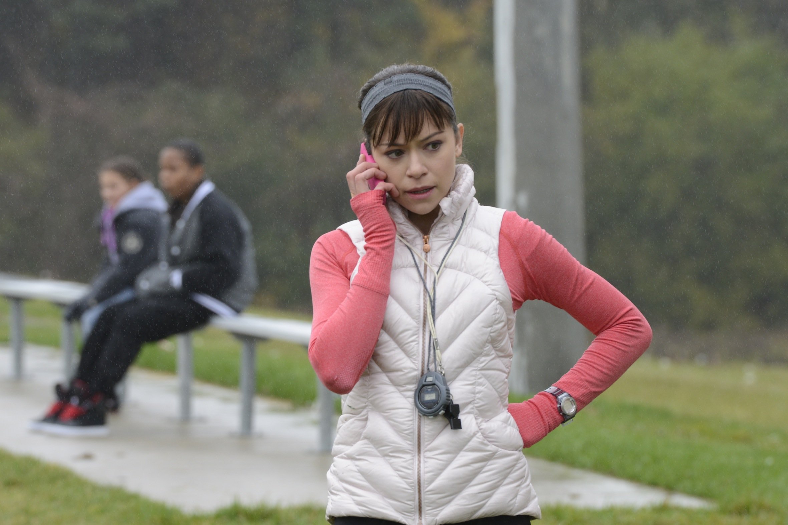
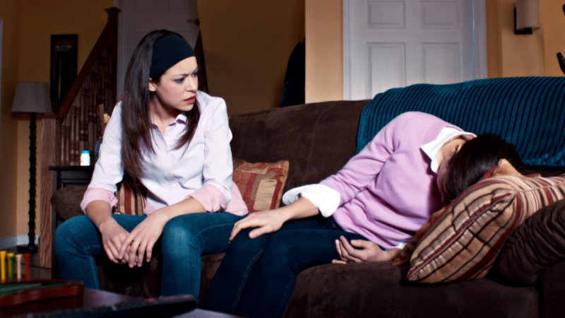

Alison Hendrix

Alison Hendrix is a clone of Canadian origin on Orphan Black. Alison had already been in contact with Beth Childs when she was approached by Sarah Manning whilst she was under the guise of Beth following Katja Obinger's death. Alison and Cosima Niehaus explain Sarah's existence as a clone to her, ending with Sarah joining their pursuit of answers regarding their origins. As time goes by, paranoia sets in on Alison and she begins acting outside of her routine and going behind the backs of her husband, Donnie Hendrix, and her best friend, Aynsley Norris. Alison's life begins to fall apart, eventually leading her to signing a document created by Dr. Aldous Leekie. Without knowing it, Alison signed away her freedom in exchange for a skewed version of normality that Leekie had promised her.
Personality
Alison is an uptight suburbanite, a devoted mother and wife, with a typical marriage and family and a single minded drive to maintain the status quo. As Alison tends to put her family ahead of herself and is the most rooted of the clones, the new reality is hard on her because unlike Cosima and Beth, she also fears for the safety of her children. She becomes paranoid, and starts suspecting her seemingly innocent husband Donnie of being her monitor, but in the end, with the help of Sarah, snaps out of it finding the necessary strength to go forward.
In Season 5, Alison embraces her impulses. She becomes much more like her sisters, taking an interest in music; though her sweetness is retained. She also finally calls out the hipocracy of her neighbors who ganged up on her for her faults.
History
Alison went to St. Thomas High School, where she was a cheerleader and became the valedictorian. She met her now husband Donnie in college, with whom she has two adopted children.
When Katja Obinger came to Beth, Beth was able to track down Alison and Cosima, and the trio soon found out about their nature as clones. For a long time, it was just the three of them who looked out for each other, while they asked Katja to give them data on the Europeans.
Wanting to protect her family, Alison was taught by Beth how to shoot a gun and keeps a Glock of her own. During this time, Beth was able to contribute with access to records only a cop can access, Cosima with her intellect, and Alison found herself useful by contributing largely to their substantial sum, which Beth used to buy information they couldn't get officially.
In "Community of Dreadful Fear and Hate", Alison is told by her mother, Connie, that she was conceived in vitro due to her father's low motility. However, Connie did not think Alison's father's genes were good enough, so she secretly had the clinic find a sperm donor, confessing that Alison's father was not her real father. Connie justified her actions as trying to give her daughter "every opportunity from day one".
Season 1
In "Instinct", Sarah Manning manages to track Alison through her address that Katja had in her briefcase. Sarah confronts her, wanting answers, but she sends Sarah away, insisting that explaining to her is not her responsibility. Alison is also furious that Sarah had risked approaching her, given that her children are close by, and is disbelieving when Sarah tells her that Beth had killed herself.
The day after their confrontation, Alison calls Sarah and tells her to come to her house with Katja's briefcase after 9:00 PM. That night, Sarah shows up and Alison, holding a gun, tells her not to wake her kids or she will shoot her. Then, Cosima Niehaus, another clone, comes into the room, much to Sarah's surprise. In "Variation Under Nature", Alison accuses Sarah of pushing Beth to her death as she is unable to accept that she committed suicide.
Still wound up, Alison gives it to Sarah straight: they are clones, someone's experiment, and that they are being killed off. Alison is taken away from the meeting though when her daughter, Gemma wakes up and sees them. Sarah's impatient foster brother, Felix, sneaks into her backyard and is caught by Alison. She points a gun at him in panic until Sarah manages to calm her down. Despite this, Sarah slaps and threatens her afterwards for pointing a gun at Felix. Alison and Sarah meet again when Sarah, needing to continue playing cop, is booked a day at the shooting range by her partner Art. Cosima tells Sarah that Alison can teach her. Sarah tells Alison that she needs to learn today, but she tells Sarah that she has no one to watch her kids. At Sarah's suggestion, Alison has Felix babysit Oscar and Gemma. In a field, Alison teaches Sarah how to shoot the same way Beth taught her some time before. While Sarah learns, she also asks questions about Beth. Afterwards, Sarah drives Alison home. Alison tells Sarah that her children can't know that Alison is a "freak."
Alison, after being persuaded by Cosima to trust her, then tells Sarah that the $75,000 in Beth's bank account was hers, given to Beth to buy information for them. Alison then tells her that Sarah could rob them, but that she and Cosima hope that she will stay and help them. Alison asks her if she can con the bank and Sarah slightly nods. When Alison gets home, she finds the children with Felix cross-dressed.
In "Effects of External Conditions", Sarah visits Alison in the middle of the night to return Alison's protection fund money that she gave to Beth. Sarah tells her that she had planned to steal the money and run away but couldn't because of Kira, her biological daughter, a fact Alison becomes curious of, telling Sarah that she should have told them earlier. With the "killer clone", Helena, on the loose, Sarah asks Alison to be available for the day, so she sends her children to her parents' home. Felix later comes over to tell her that she needs to pretend to be Sarah for her visit with Kira when Sarah's plans blow over. Initially skeptical, Alison eventually agrees, seeing it as an opportunity to play a role. She successfully convinces Mrs. S, but not Kira.
When she fails to convince Kira, Alison tells her that she is her "Auntie Alison" and that Sarah couldn't be there because she is out making sure that everything is safe for them. Kira agrees to keep her secret and pretends that Alison is Sarah in front of Mrs. S.
In "Conditions of Existence", Alison learns from Sarah while video chatting that Helena is still on the loose. Sarah thanks Alison for helping with Kira and for arranging it so that Sarah can walk Kira home from school the next day. Alison says that Kira is a special girl and that Sarah is lucky to have her. Afterwards, Alison gets into bed with her husband who tries to initiate sex with her. When he puts his hand on her breast, she slaps his hand and whispers, "No!" Donnie gives up and goes to sleep too. The next day, Alison is with Sarah and Felix at Felix's apartment video chatting with Cosima. Sarah shows Cosima the electrode that Sarah coughed up while brushing her teeth and Cosima tells her that it is from an EEG helmet. Sarah comments that the dream she had the previous night, the one where doctors examined her in her sleep, must have been real. Alison chimes in that the clones are all lab rats in an illegal experiment and that there must be someone watching them. When she hears that Sarah slept with Paul, she theorizes that maybe Donnie is spying on her. Alison then gives Sarah a gun and 20,000 dollars for defense. Back at her house, Alison walks in on Donnie going through her vanity drawers while talking on the phone. He tells her that he's looking for scissors. Alison finds a pair of scissors on her vanity and asks him who he was talking to on the phone. Donnie tells her that it was someone from work. Later, while Donnie is in the garage, she goes through his clothing drawers. Hidden underneath the last drawer, she finds pornographic DVDs. Later, in the garage, Alison finds a padlocked hidden metal box and tries to saw it open. However, Donnie returns before she can get it open. Donnie refuses to show her what's inside and hurries off with it. While in town with Oscar and Gemma, Alison gives them money to go buy candy with while she goes into a surveillance store to buy a camera to spy on Donnie. When she comes out, Vic sees her and thinks that it's Sarah. She walks off but Vic follows her and begins yelling at her about how she faked her death. Alison maces and tases him before getting the kids and fleeing. Alison calls Sarah and tells her about the whole ordeal. She also learns from Sarah that Beth was spying on Paul. Back at home, Alison finds the metal box unlocked and the same stack of pornographic DVDS she'd discovered in their closet earlier inside. She then places the nanny cam she bought next to her bed to record what happens to her while she sleeps. When Donnie says that he'll sleep on the couch, Alison tells him that everyone deserves their privacy and invites him into bed.
In "Variations Under Domestication", Alison gets out of bed while Donnie is sleeping to check the footage from the nanny cam. She fast-forwards the tape to around 4:00 AM, where Donnie gets out of bed walks around to Alison's side of the bed. After looking down at her for a few seconds, Donnie walks out of the room. Alison fast-forwards the tape to the end, but nothing happens. Alison goes upstairs to find Donnie putting silverware in the dish washer and grumbling. Donnie sees Alison and starts complaining how things haven't been done. When Alison asks where Donnie went in the middle of the night, Donnie evades the question. She tells him that she woke up and he wasn't in bed and Donnie continues to evade. When Alison tries to have a conversation, Donnie tries to leave saying he needs to get supplies. Frustrated, Alison hits him across the face with a golf club and Donnie falls unconscious. Alison then calls Sarah and tells her to come to her house immediately. When Gemma and Oscar come inside, Alison tells them to go over to Aynsley's house. Alison then gets Donnie into the basement and ties him to a chair. When Donnie wakes up, Alison tries to question him. When he doesn't answer, she spreads hot glue from a glue gun onto his bare chest. She accuses him of being her monitor and for switching the files in his box for porno DVDs. Donnie denies Alison's accusations and any knowledge of the German when she mentions her. When there's a knock on the basement door, Alison blinds and gags Donnie and lets Sarah in. Alison shows Donnie tied up and tells Sarah that she thinks Donnie is her monitor. When they hear voices upstairs, Alison says that she completely forgot and runs upstairs. She finds Aynsley and family coming in with other neighborhood people. Apparently, it is Alison's turn to host a weekly potluck. Alison tries to get them to host somewhere else, but Aynsley tells her that it's too late for that. After other show up, Alison hangs up an "off limits" sign in front of the basement stairs. Aynsley tells Alison that nothing is ready, Alison asks her to cover for her and takes Aynsley's cup of wine. When Charity asks what is off limits, Alison tells her that they're renovating the basement. Alison goes downstairs and tells Sarah what's going on. Sarah tells her to kick them out, but Alison tells her that she can't. She also goes on to tell Sarah that she has no ice or bartender because Donnie is tied up. Alison tells her that while she deals with things upstairs, she wants her to interrogate Donnie, pretending to be Alison. Upstairs, Alison's friends notice that she's already drunk. Later, Felix, who Sarah calls and asks to be the bartender, finds an inebriated Alison and takes her downstairs. When Felix goes back upstairs to handle the party, Alison laments to Sarah that she ruined her family. When Alison says that she's not a real person, Sarah tells her she is and that that she's handled everything well so far and tells her that Donnie said he got up late at night to watch cricket on TV. Sarah goes on to tell her that since she's known Donnie since high school, it's unlikely that Donnie is her monitor. After stating that her monitor is probably one of the "bitches" upstairs, she passes out on the sofa.
In "Parts Developed in an Unusual Manner", Sarah mentions that Alison and Donnie are away at a retreat trying to help their marriage.
In "Entangled Bank", Alison calls Sarah after coming home from couple's camp early. She tells Sarah that she's decided to divorce Donnie. Sarah expresses worry and Alison tells her that she's fine and, when she sees Aynsley at the door, says that she doesn't need help weeding out the liars and spies in her life. After hanging up, Alison hides from Aynsley and sees her going through the Hendrix's mail. When Alison comes out, Aynsley tells her that she came over to water the plants, much to Alison's disbelief. Aynsley asks Alison questions that further raise her suspicion that Aynsley is her monitor. Aynsley offers to take over Alison's duties as figure skating coach, to which Alison wholeheartedly disagrees. Alison takes her house keys back from Aynsley and makes her leave. When Alison arrives at the ice rink, Aynsley is there ready to coach. Chad tries to tell Aynsley to back off, but Aynsley rebukes him and he leaves. Alison tries to tell her she's fine, but Aynsley tells her that she's mad at Donnie and not herself. Before walking out, Alison tells Aynsley that if she's going to mess with her life, she'll mess with Aynsley's. In the parking lot, Alison finds Chad smoking marijuana in his minivan. When Chad throws it out the window, Alison picks it up and takes a drag. She gets in the van and smokes with him while talking about their less-than-perfect marriages. After some flirting, they end up having sex in the back of the minivan. That night, when Alison is driving home, Aynsley stops her and the two end up fighting in the middle of the street. Later, Alison shows up drunk at Felix's loft needing to talk.
Since Art and Angela Deangelis are on their way to question Felix about Sarah's "death," Alison leaves with Sarah. While Sarah drives Alison's minivan, Alison tells Sarah about what she did. While Sarah is slightly impressed, Alison laments that she hates lying to her family. Sarah suggests that they tell their loved ones the truth. They go to Mrs. S's house and Sarah introduces Alison to her. They sit down and Alison tells Mrs. S about herself. Mrs. S correctly deduces that Alison came to see Kira as Sarah once. When Alison starts to break down, Mrs. S takes her to the guest room lay down.
In "Unconscious Selection", after Kira is rushed to the hospital after being hit by a car, Alison shows up in the waiting room where Sarah, Felix, and Mrs. S are. She asks if anyone wants coffee, but nobody answers. Alison knows she's in the way, but tells Felix that she can't help but feel like Kira's her own daughter. Felix suggests that she go home and get some rest. Alison tells him that she can't go home because she assaulted Aynsley, who she believes to be her monitor, and she fears being taken away. Felix gives her the key to his loft to use. Alison takes a last look at Sarah and leaves. The next morning, Alison cleans Felix's loft and organizes his drugs. Felix shows up and tells her that Kira is going to be fine. Alison suggests that she stays at the loft while she apartment hunts. Felix reluctantly agrees to let her stay one night. Alison tells him that she needs to go by her house to get some supplies and, not wanting to go alone, convinces Felix to go with her. When they get to Alison's house, Donnie is waiting there with his mother, a priest, Aynsley, and others who have gathered to give her an intervention. Clearly annoyed, Alison sits down in the circle. Donnie starts by telling her that she needs to stop drinking and taking pills. He also brings up her constant criticism and her actions at the potluck. Aynsley talks about how she slept with Chad, how Alison assaulted her, and how Alison turned her back on their friendship. Donnie then talks about their kids and asks her if she wants to break up the family. This deeply hurts her and she hurries upstairs. Alison locks herself in the bathroom and only allows Felix to come in. Alison assumes that Aynsley set the intervention as an experiment. Alison takes some of her pills which she shares with Felix. Felix tells her that she needs to be a woman, go back out, face the music, and let Aynsley think she's won. That way, she'll live to fight another day. Alison then asks Felix to help her with her makeup. Back downstairs, Meera tells Alison that she and her children saw her in the van with Chad. Aynsley tells Alison that she's caused a lot of damage to the people who trusted her. Aynsley tells her that she arranged the intervention because she cares and wants to help her. Alison "thanks" her for scrutinizing, gossiping, and snooping. Alison then brings up that Chad slept with the spin class instructor before Alison and that Aynsley gave oral sex to a roofer. Donnie then makes everyone leave. Before walking out, Aynsley tells Alison that she made a huge mistake. Felix and Alison agree that that went well.
Season 2
In "By Means Which Have Never Yet Been Tried", Alison is first seen in Felix's loft with Sarah, Cosima, and Cal. Cal is saying goodbye and when he leaves, Alison whispers to Sarah, "He's hot." Sarah comes back in with Sarah and Helena. Helena is introduced to Cosima and Alison. When Helena asks if Alison is married, Alison tells her that marriage is very rewarding if one can get through "rough patches." Then, Helena is reunited with Kira. Later, Cosima puts on a record and the sisters, Felix, and Kira all dance to the music.
Season 3
Alison begins the third season coaching her daughter's soccer team. She speaks with Sarah and Cosima on the phone regarding the existence of the Castor clones and reassures Sarah that she will be fine if threatened. After the game, Alison is approached by Marcie Coates, the incumbent school board trustee for Alison's home district. Marcie asks if Alison will support her bid for reelection. Alison dos not answer but instead proposes her own bid to be school board trustee, after learning that Marcie plans to change electoral boundaries, forcing Alison's children to change schools. After their conversation, Donnie appears with a box of his belongings, telling Alison that he has been fired for talking back to his boss, Susan Teller. Later on, Donnie and Alison try to figure out how to pay their bills with both of them unemployed. Alison reveals her plan to run for school trustee. Their conversation is interrupted by Delphine who enlists Alison into helping her fool Ferdinand - a Topside executive hired to check up on Dyad and the Leda clones.
Later in the episode, Alison impersonates an imprisoned Sarah being held at Dyad (Sarah is otherwise impersonating Rachel throughout the plan). Ferdinand questions Alison as Sarah while examining her body with his hands, making her extremely uncomfortable. When the plan works, Alison returns home. However, Ferdinand's bodyguard Bulldog has been sent by Ferdinand to chloroform Alison and her family and set their house ablaze in an effort to eradicate all known clones in the area. This plan was agreed upon by both Ferdinand and Rachel. Alison hears a noise in her backyard, but before she is attacked, Bulldog is told to abort the mission by Ferdinand, as Delphine discovers his purpose.
Source: orphanblack.fandom.com